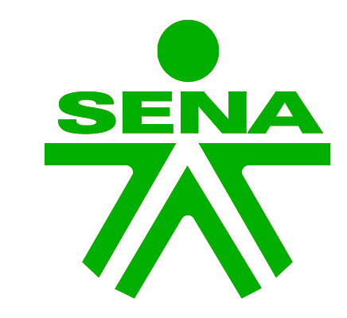

SENA POMAR: GIMNASIORecorre el gimnasio y toca cada botón verde para conocer qué riesgo hay en la imagen y cómo prevenirlo.
Un gimnasio también deja huella en el entorno. Abre cada aspecto para ver su causa y cómo gestionarlo.
Iluminación, ventilación, pantallas, parlantes y equipos eléctricos funcionan muchas horas al día. Esto aumenta el consumo de electricidad y las emisiones asociadas. Acción: luminarias LED, apagar equipos sin uso y programar horarios.
La limpieza de superficies y equipos, los bebederos y las zonas de aseo gastan agua. Los residuos de desinfectantes pueden llegar al alcantarillado. Acción: dosificar los productos, usar paños reutilizables y revisar fugas.
Se generan botellas plásticas, envases de productos de limpieza, trapos desechados y equipos electrónicos o implementos deteriorados. Mal manejados contaminan suelo y agua. Acción: puntos ecológicos, separación en la fuente y entrega de residuos peligrosos a gestores autorizados.
Los ventanales y los ventiladores permiten reducir el uso de luz artificial y de aire acondicionado, con menor gasto de energía. Se potencia con rutinas que usen bien la luz del día.
Racks, discos, mancuernas y balones tienen una vida útil de muchos años y se pueden reparar o reasignar. Esto reduce la generación de residuos frente a productos desechables.
Al reunir a aprendices y comunidad, el gimnasio permite promover hábitos saludables y sostenibles: ahorro de energía y agua, reciclaje y desplazamientos activos a pie o en bicicleta.